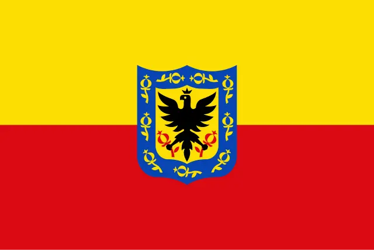

About Me
I am a dedicated professional balancing work, studies, and personal growth
with a focus on maximizing productivity and achieving my goals.
My approach is centered on staying energized and organized to handle
diverse responsibilities effectively.
In my personal and professional life, I strive to maintain a thoughtful,
adaptable perspective while continuously seeking ways to grow and improve.
Bogota, Colombia
Bogotá was founded as the capital of the New Kingdom of Granada on 6 August 1538 by
Spanish conquistador Gonzalo Jiménez de Quesada after a harsh expedition into the Andes
conquering the Muisca, the indigenous inhabitants of the Altiplano. Santafé (its name after 1540)
became the seat of the government of the Spanish Royal Audiencia of the New Kingdom of Granada
(created in 1550), and then after 1717 it was the capital of the Viceroyalty of New Granada.x|